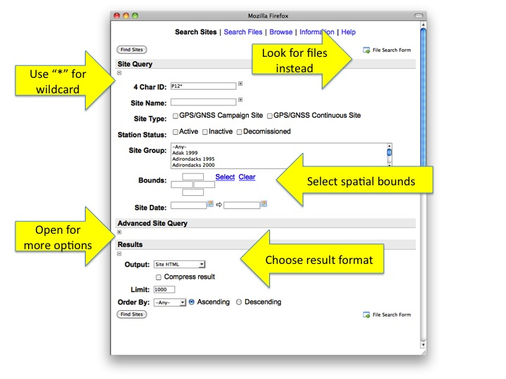

GSAC Site Search
The Site search form may contain different fields depending on
which GSAC repository you are viewing but they typically look like
this:

Free Text Search
The free form text search fields (e.g., "4 Char ID", "Site Name") support wildcarding with "*". So, for example, in the above image the search will result in any sites that begin with "P12".
Spatial Search
You can select other search criteria including spatial bounds. The spatial bounds are specified with a north/west/east/south or you can select them in a map view.
Advanced Search
The Advanced Site Query can be opened to select other search criteria.
Result Format
As described here the GSAC repository
can return site search results in a number of formats, e.g., HTML (the default), Google Earth KML, CSV, etc.
File Search
You can easily switch to the File Search form. Any site search criteria
specified in the form will be used in the File Search form.